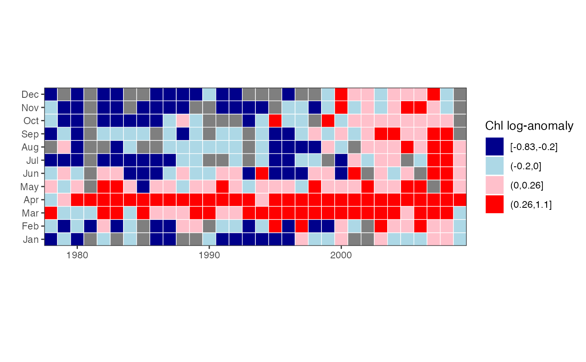

Monthly values are transformed into deciles or other bins, and corresponding colors are plotted in a month by year matrix.
plotTsTile( x, plot.title = NULL, legend.title = NULL, four = TRUE, loganom = TRUE, square = TRUE, legend = TRUE, trim = TRUE, overall = TRUE, stat = c("median", "mean") )
Arguments
| x | monthly time series. |
|---|---|
| plot.title | plot title. |
| legend.title | legend title. |
| four | logical indicating if data should be binned into 4 special groups or into deciles. |
| loganom | logical indicating if data should be transformed into log-anomalies. |
| square | logical indicating if tiles should be square. |
| legend | logical indicating if a legend should be included. |
| trim | logical indicating if leading and trailing NA values should be removed. |
| overall | determines whether anomalies are calculated with respect to overall mean or to long-term mean for the same month. |
| stat | determines whether anomalies are calculated and binned using mean or median. |
Value
An image plot of monthly values classified into either deciles or into four bins as described above (and corresponding object of class “ggplot”).
Details
If four = TRUE, then x is first divided into a positive and
negative bin. Each bin is then further divided into two bins by its mean,
yielding a total of four bins. If four=FALSE, then x is simply
divided into deciles. In either case, each bin has its own assigned color,
with colors ranging from dark blue (smallest numbers) through light blue and
pink to red.
Although four = TRUE can be useful for any data in which 0 represents
a value with special significance, it is especially so for data converted
into log-anomalies, i.e., log10(x/xbar) where xbar = mean(x,
na.rm=TRUE). The mean month then has value 0, and a value of -1, for
example, indicates original data equal to one-tenth the mean. Log-anomaly
transforms can be particularly appropriate for biological populations, in
which variability is often approximately proportional to the mean.
When loganom = TRUE, the anomalies are calculated with respect to the
overall mean month. This differs from, for example, the log-anomaly
zooplankton plot of O'Brien et al. (2008), in which a monthly anomaly is
calculated with respect to the mean value of the same month. To get the
latter behavior, set overall = FALSE. A further option is to set
stat = "median" rather than the default stat = "mean", in
which case xbar = median(x, na.rm = TRUE), and the positive and
negative bins are each divided into two bins by their median instead of
mean. Using combinations of these different options can reveal complementary
information.
You may want to set square = FALSE and then adjust the plot window
manually if you plan to use the plot in a subsequent layout or if there is
too much white space.
References
O'Brien T., Lopez-Urrutia A., Wiebe P.H., Hay S. (editors) (2008) ICES Zooplankton Status Report 2006/2007. ICES Cooperative Research Report 292, International Council for the Exploration of the Sea, Copenhagen, 168 p.
Author
Alan Jassby, James Cloern
Examples
# plot log-anomalies in four bins chl27 = sfbayChla[, 's27'] plotTsTile(chl27, legend.title = 'Chl log-anomaly')# plot deciles plotTsTile(chl27, plot.title = 'SF Bay station 27', legend.title = 'chlorophyll', four = FALSE, loganom = FALSE, square = FALSE)